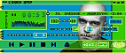

Update: Видео Update: Видео
+ За
феновете на "Бедните не могат да скачат (Thank You
People)" клипа към песента е вече онлайн на
страницата. Както се казва "Enjoy!" :) Кликнете тук.
Update: Новите
варвари в Благоевград - Captures Set 4 и 5
+ 2
колажа с кадри. Очаквайте още!
Set
4 (12 малки снимки, 112KB)
Set 5 (8 малки снимки, 75KB)
Update: Ку-ку Бенд
+ Ето
и обещаната информация за всеки един музикант от
Ку-Ку Бенд. Очаквайте интервюта! Кликнете тук.
Update: Музика
+ Ела,
Ела (Latino Mix) - LIVE (wma, 3,9MB)
 Update: Новите
варвари в Благоевград - Captures Set 1,2 и 3 Update: Новите
варвари в Благоевград - Captures Set 1,2 и 3
+ СлавиWeb
бърза да ви направи съпричастни към прякото
предаване на концерт на Слави и Co по bTV. Подбрали
сме някои кадри специално за вас, а скоро
очаквайте и повече!
Set
1 (12 малки снимки, 114KB)
Set 2 (12 малки снимки, 120KB)
Set 3 (12 малки снимки, 120KB)
Stories: Люси за турнето
 + В брой 37 в."Култ" надникна в главата
на Люси. Ето какво той казва за турнето: + В брой 37 в."Култ" надникна в главата
на Люси. Ето какво той казва за турнето:
Много съм щастлив, че работя в екипа на
Слави Трифонов. За мен бе чест, че ми предложиха
да бъда подгряващ на последното им турне заедно с
колегите от "Каризма".
Хората ни приемат много добре, радват ни
се, пеят нашите парчета. Навсякъде стадионите са
препълнени. Усещането да се появиш пред 20 или 30
хиляди души е необяснимо! Разбираш го едва след
като го изживееш.
Въобще - голям купон е! Но е и много
уморително. През ден изминаваме стотици
километри. Но мъничко остана! - текст Петя
Пунчева
Re-update: bTV - 22.30ч
+ bTV
няма да излъчи най-доброто от "Виктори: Турнето
на новите варвари", както писа в."Култ"
(бр.38). Вместо това феновете ще имат възможността
да гледат пълен запис на концерта в Благоевград.
Очаквайте:
Най-доброто от "Виктори: Турнето на новите
варвари"
+ Ето
че турнето е вече към своя край. Но екипът на
Слави е помислил и за всички, които не са успели
да посетят негов концерт и на 21 септември, от 22.30ч.
по bTV, е подготвил репортажи от всички концерти - 60
мин зрителите ще видят най-доброто. Не
пропускайте!
Update: Ку-ку Бенд
+ С
известно закъснение най-накрая и Ку-ку Бенд си
намериха своето място в СлавиWeb. Засега Ви
предлагаме само кратка история на бенда. До 2-3 дни
очаkвайте информация за всеки един музикант от
оркестъра. Кликнете тук.
Скоро: СлавиAmp
 + Една
добра новина! WinAmp skin-ът е вече почти готов и много
скоро ще бъде сложен на страницата. Извиняваме се
на всички, които сме разочаровали, оставяйки тази
подсекция празна при стартирането на сайта.
Update: Книга за
Гости
+ От
днес СлавиWeb има Книга
за Гости. Ако имате някакви коментари и
забележки, подпишете се... След ден-два се върнете,
за да видите дали сме отговорили на вашето
съобщение. Благодарим Ви!
News: Солун плаче от
Слави. Полиция гони фенове на певеца от сцената
+ Слави
и компания бяха звездите, които закриваха
четвъртия фолкфестивал "Балкански площад",
провел се в Солун. "Новите варвари" се
представиха със специална програма, в която
наблягат на традиционни фолклорни песни -
"Назад, назад моме Калино", "Кога зашумят
шумите", "Охридското езеро"; и хитовите
такива на Слави - "Стоп! Забрави за
правилата", "Ад и рай", "Нека ме боли".
Шарената балканска публика останала очарована
от изпълненията и час след края на концерта
родните звезди раздавали автографи. Слави не
пропуснал да се представи на тези от публиката,
които не го познават. Той казал за себе си и екипа,
че от 10 години прави балканска музика и
най-популярното телевизионно предаване в
момента. Също така добавил, че гости са му били
гърците Василис Карас и "Antique", и македонците
Каролина Гочева и Игор Джамбазов. След тези свои
думи, той окончателно спечелил гостите от
съседките ни. Балет "Сатен" и формация
"Етника" доказали класата си за пореден път
и оставили танцьори и публика от другите
страни-участнички със зяпнала уста. В края на
шоуто, вече нямало зрител останал равнодушен към
нашенците. За Слави и компания ще се говори вече
не само у нас.
Източник: в.24 часа
Old news: Слави във
Враца
+ 3000 човека успяват да влязат гратис
на концерта на Слави във Враца. Те успяват да
прескочат оградата още в ранния следобед и
охраната отказва да ги гони. В същото време, 9500
влизат с редовно закупени билети. Намират се
такива, които гледат концерта безплатно -
живеещите около стадиона и техните гости се
наслаждавали на концерта от балконите на
апартаментите си. Страстите се разгорещяват,
когато излиза Годжи и поздравява публиката с
"Здравей Враца, аз съм си почти от тук".
Енергетиката и мащабността на първия концерт от
турнето доказва, че то ще бъде абсолютен фурор.
Източник: в.24 часа
Old news: Шест биса за
Слави в Русе. Дългия събра над 14 000 души на
Градския стадион и целуна пистата пред тях
+ За
пръв път русенският градски стадион събира
толкова много публика на концерт. Слави изпя
хитовете си от всички поредни албуми, започвайки
с първия си солов проект "Едно ферари с цвят
червен" и стигайки до най-новия макси-сингъл
"Новите варвари". Публиката подгряваха вече
соловия изпълнител Люси (бивш солист "Up Down")
и новосформирания дует "КариZма". Те изпяха
по две песни и след това на сцената се появиха
вече Ку-Ку Бенд и балет "Сатен". След минути
влезе и Слави, придружаван от двама бодигардове.
Пиротехниката и ефектното осветление направиха
концерта още по-впечатлителен и уникален. В края
на концерта фронтмена не пропусна да целуне
пистата пред два различни сектори и да благодари
на русенци за подкрепата им през годините, когато
даже и "Хъшове" не се излъчваха в града ни.
Източник: в.Бряг
Update: Видео
+ Днес
бяха добавени още 2 клипа в секцията "Шоуто:
Видео" - кратки изпълнения съответно на
Слави и Никос от Антик, и на Руслан. Кликнете тук.
 News: Дъждът без малко не отложи
концерта на Слави в Русе News: Дъждът без малко не отложи
концерта на Слави в Русе
+ В материалите си относно Слави и
компания, русенската преса наблегна на факта, че
концерта можеше да бъде отложен заради
метеорологичните условия в града. Всекидневника
"Утро" публикува на първа страница снимка на
Слави играещ табла под заглавие "Дъждът без
малко не отложи концерта на Слави и компания".
В статията също така се обсъжда и менюто на екипа
по време на престоя им в русенския хотел
"Рига". Участниците в турнето наблегнали на
зеленчуковите ястия, но не се отказали от
вкусните сладкарски изделия предлагани в
сладкарницата на хотела. Подчертава се факта, че
Слави посетил фитнес залата на комлекса и че
Руслан Мъйнов търсел съчувствие у колегите си за
краткото време, прекарано в сън. Другият русенски
всекидневник - "Бряг", публикува снимка на
сцената на шоуто и факти около размерите и
техническото й оборудване. Също така на
последната страница има малък материал за
рождения ден на русенеца Венелин Венков, който
той отбелязал в един от русенските клубове.
Вмъкнат е и факта, че екипа поздравил още един
рожденик от екипа и успяли да обиколят наличните
в града нощни заведения.
Източници: в.Утро,
в.Бряг
News: Новите
варвари не се сърдят на Томов
+ "24 часа" не пропускат да
отбележат какво е споменал бившия шеф на НСРТ
Александър Томов по повод на турнето на Слави.
"На този Слави Трифонов му щракна, че може да
спечели от тая работа пари и каза - аз съм
варварин, ние сме новите варвари", казва той.
Също така нарича сценариста Росен Петров
"милиционер хуморист, завършил школата в
Симеоново". Явно Томов има зъб не само на Слави
и екипа му, а и на органите на реда в страната,
след като се отнася с такова пренебрежение към
висшия им институт. В статията е публикувана и
информацията, че концерта в Бургас няма да се
проведе на стадион "Нефтохимик", а е
преместен на стадион "Черноморец".
Причината е отказа на Христо Порточанов да
допусне екипа да използва стадиона безплатно.
>> Мнението
на Александър Томов за Слави и предложение за
нова концепция:
"На този Слави Трифонов му щракна, че може да
спечели от тая работа пари и каза - аз съм
варварин, ние сме новите варвари. Аз му давам
втора идея - да ги вкара всичките тия - цар Ирод,
Саломе Велева, Петър Вагината, Червенка
Копринкова, Силвани, Татяни в шоуто и Джей Лено
трици ще яде. Оркестърът на Горан Брегович ще се
удави в Дунава, а циганите на Кустурица ще си
направят харакири. Такова шоу ще стане и тогава
ще имат успех не между Мездра и Видин, а от
Белград до Мюнхен"
Източник: в.24 часа
News: 750 000 взима
Слави от турнето
+ Едва са минали 3 концерта от
турнето "Виктори - турнето на новите
варвари" и вече изчислиха колко ще спечели
Слави. Поп-фолк вестникът "Култ" отдели цяла
страница да разкаже на своите читатели
подробности около турнето на гологлавия.
Феновете на Слави ще бъдат свидетели на нещо
наистина невиждано досега. Името на Слави
Трифонов ще се изписва с огън в небето, обрамчено
с десетки пуснати на свобода бели гълъби. Това
симолизирало непокорството на духа и сремежа за
свобода на екипа на "Шоуто на Слави".
Част от скечовете били базови, а друга част щели
да се дописват на място в зависимост от
актуалните събития. "Наблягаме на битовия
хумор, защото хората не се вълнуват чак толкова
от политика" - сценаристите на Слави.
Източник: в.Култ
Update:
+ Ето, че дойде ред
и на първият update на сайта. Днес добавихме малко
повече информация за турнето на Слави:
допълнителни факти и стадионите, на които ще пеят
Слави и Ку-Ку Бенд.
+ Все
пак не забравихме, че при стартирането на сайта,
подсекцията "Слави: Музика" беше n/a и
се постарахме възможно най-бързо да поправим
това. Предлагаме Ви 2 песни на Слави, които може да
изтеглите от нашия сайт - "Ела, Ела (Club Mix)" и
"Лошо няма". Песните не са във формат Mp3,
както и никога няма да бъдат! Кликнете тук.
+
Добре дошли на всички, престрашили се да влязат в
този нов новеничък сайт! Ние от Team MVM, които го
създадохме и смятаме да го поддържаме занапред,
доста се потрудихме над него. Надяваме се да Ви
хареса това, което ще намерите тук и следващият
път, когато ни посетите да не сме просто случайна
спирка от виртуалното Ви пътешествие из Internet, а
link от вашия Favorites лист.
+ За
повече информация какво съдържа този сайт и
каква е неговата цел влезте в "Карта на
сайта" (от менюто вляво). Там сме описали
подробно съдържанието на всяка една секция и
подсекция. Ако имате някакви въпроси към нас, не
се колебайте и ни пишете mail, но преди това
проверете дали не сме отговорили на вашия въпрос
в "Често Задавани Въпроси".
Е, остана само да Ви пожелаем приятно
разглеждане! |
|